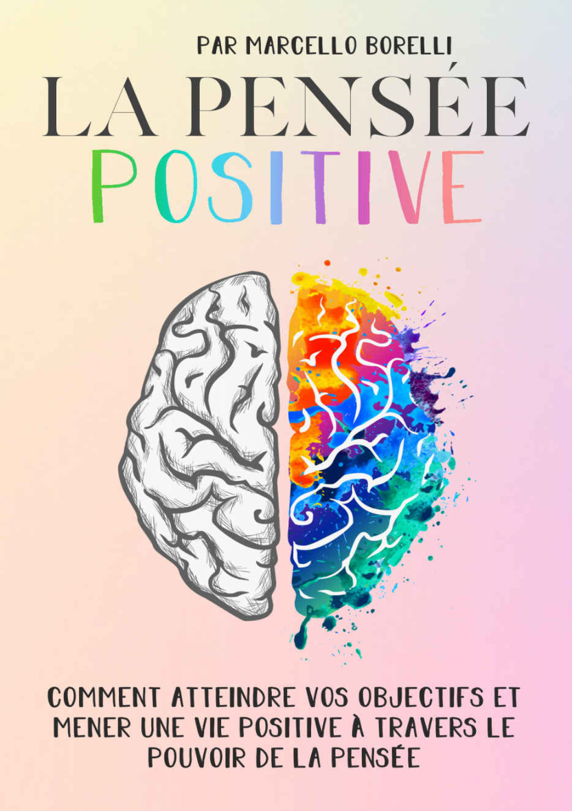

vie-et-societe
La pensée positive


Carte d’identité
- Auteur
- Marcello Borelli
- Genre
- vie-et-societe
- Éditeur
- Non indiqué dans le PDF
- Année
- 2020
- ISBN
- 9798621428907
- Fichier
- 93 pages PDF
Résumé du livre
Le texte décrit les effets attribués aux pensées négatives, les bénéfices espérés de la pensée positive et vingt conseils pratiques. Certaines affirmations relèvent de la démarche de développement personnel et ne doivent pas être assimilées à des résultats scientifiques établis.
Sections et chapitres · 12 repères paginés
Synthèses extractives de repérage fondées sur le texte des sections. Elles ne remplacent pas des résumés analytiques exhaustifs.
01IntroductionPDF p. 8
IntroducƟon Je souhaite vous remercier sincèrement et me féliciter avec vous pour avoir acheté ce livre, « la pensée posiƟve : comment apprendre à penser posiƟvement pour avoir plus de succès et de bonheur dans votre vie ». Vous êtes bien près de commencer l’aventure d’explorer votre…
Lire à cette page ↗02La puissance de l’espritPDF p. 12
Très probablement, vous désirez une vie sans conflits, sans stress et qui ne cache pas de mauvaises surprises, n’est-ce pas ? Vous pouvez même désirer, voire rêver, une vie « parfaite », mais pensez-vous réellement pouvoir l’aƩeindre ? Êtes-vous vraiment capable de visualiser de manière…
Lire à cette page ↗03Les conséquences des pensées négativesPDF p. 17
Les conséquences des pensées négaƟves Connaissez-vous l’ancien proverbe « L’esprit au-dessus de la maƟère » ? Cela est sans doute perçu différemment par chacun de nous, mais le concept de base reste le même. On souligne ici la force de l’esprit et les réacƟons à différentes situaƟons à…
Lire à cette page ↗04Les avantages de la pensée positivePDF p. 28
Les avantages de la pensée posiƟve Les facteurs externes de notre vie ne peuvent être contrôlés. Nous pouvons au contraire décider de notre façon de penser et de réagir. Nos pensées déterminent la façon dont nous nous meƩons en rapport avec les obstacles qui se dressent sur notre…
Lire à cette page ↗05Conseils pour surmonter les pensées négatives et devenir des penseurs positifsPDF p. 38
Conseils pour surmonter les pensées négaƟves et devenir des penseurs posiƟfs Un opƟmiste est conscient de la réalité de la vie, mais décide de se concentrer sur les aspects posiƟfs. Ceci est similaire au concept de voir le verre à moiƟé plein ou à moiƟé vide : une quesƟon de principe,…
Lire à cette page ↗06Comment rester un penseur positifPDF p. 61
Comment rester un penseur posiƟf Beaucoup d'entre nous savent ce qu'est la pensée posiƟve et les avantages qui y sont associés. Par la méditaƟon, l'affirmaƟon, le développement d'habitudes, la moƟvaƟon et la maîtrise de soi, nous pouvons transformer les pensées posiƟves en une réacƟon…
Lire à cette page ↗07ConclusionPDF p. 73
Conclusion Je voudrais vous remercier une fois de plus d'avoir acheté ce peƟt manuel. J'espère sincèrement que vous pourrez transformer vos pensées négaƟves en pensées posiƟves. La vie est courte et vous ne devez pas la gâcher en vous inquiétant de choses difficiles ou en vous…
Lire à cette page ↗08EXTRAITPDF p. 77
EXTRAIT L'art de lire dans les pensées La méthode d'apprenƟssage cogniƟf pour la lecture de l'esprit par Marcello…
Lire à cette page ↗09IntroductionPDF p. 78
IntroducƟon Une conversaƟon tout à fait normale se déroule depuis quelques minutes maintenant. Puis, soudainement, votre interlocuteur dit ce qui vous passe par la tête à ce moment-là, comme s'il avait lu dans votre esprit. Pendant un instant, vous êtes surpris, peut-être pensez-vous…
Lire à cette page ↗10Qui peut lire dans les pensées ?PDF p. 82
Tout d'abord, comme déjà menƟonné dans l'introducƟon, il convient de souligner que l'image que l'on se fait du concept de « lecture des pensées » est souvent fausse et cela s'explique par le fait que les gens trouvent parƟculièrement intéressant ce qu'ils ne peuvent pas expliquer. Ce…
Lire à cette page ↗11Exclusions de responsabilitéPDF p. 92
Exclusions de responsabilité La mise en œuvre de toutes les informaƟons, instrucƟons et conseils contenus dans ce livre électronique est à vos propres risques. Pour les dommages de toute nature, l'auteur n'assume aucune responsabilité légale. L'auteur exclut toute les réclamaƟons de…
Lire à cette page ↗12Droits d'auteurPDF p. 93
Droits d'auteur Tout le contenu de ce travail, ainsi que les informaƟons, les direcƟves et les conseils sont protégés par le droit d'auteur. Toute réimpression ou reproducƟon, même sous forme d'extraits, sous quelque forme que ce soit, sous forme de photocopies, ou par des procédés…
Lire à cette page ↗